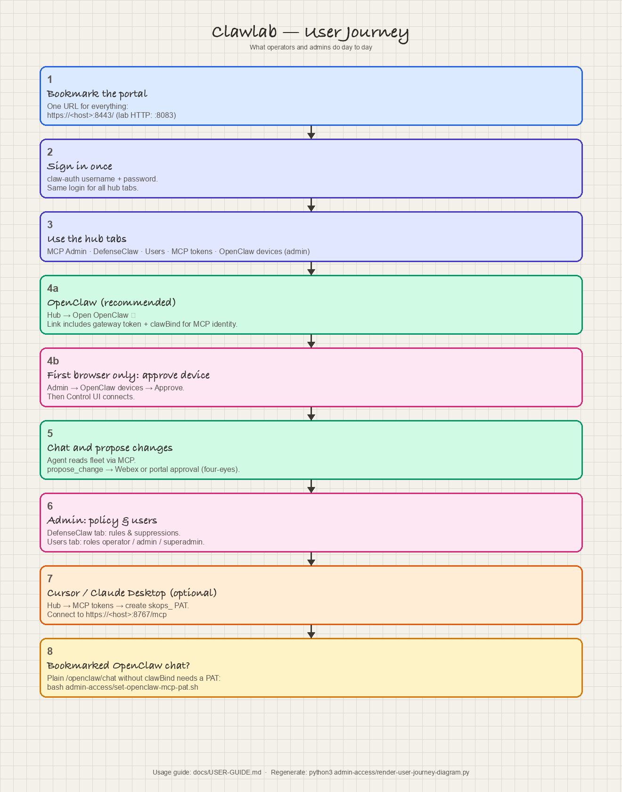

User journey
What operators and admins do after install — one portal login, hub tabs, OpenClaw from the hub, optional Cursor PAT, and four-eyes change approval.

Regenerate: python3 admin-access/render-user-journey-diagram.py
What operators and admins do after install — one portal login, hub tabs, OpenClaw from the hub, optional Cursor PAT, and four-eyes change approval.

Regenerate: python3 admin-access/render-user-journey-diagram.py